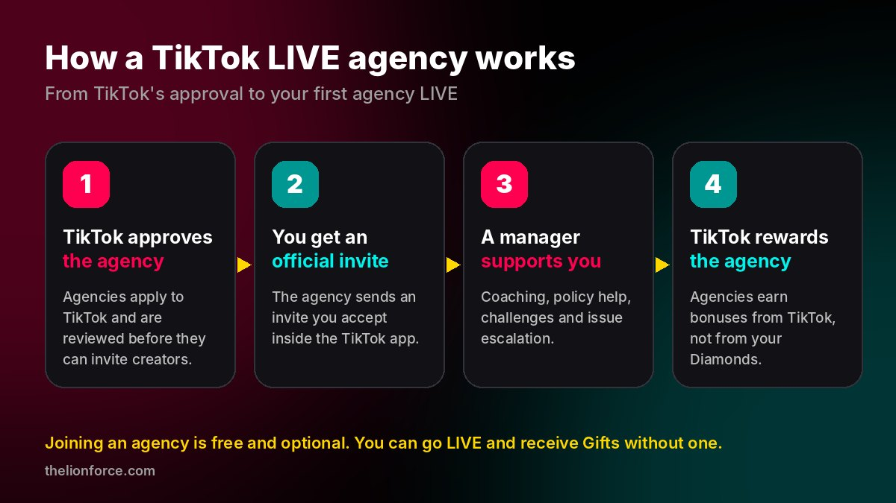
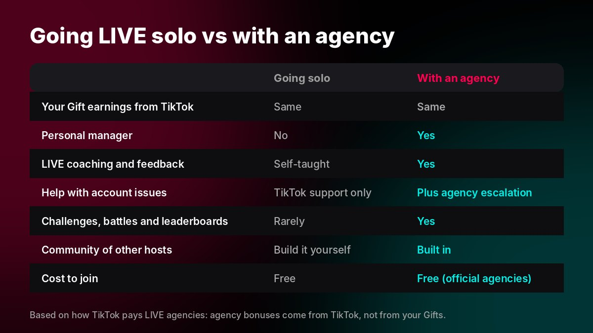
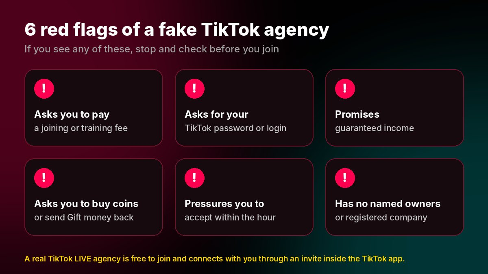

A TikTok LIVE agency (officially, a member of TikTok's LIVE Creator Network) is a company approved by TikTok to recruit, coach and support creators who go LIVE. You join through an official invite inside the TikTok app, it is free, and TikTok pays the agency separately, so your Gift earnings stay the same.
It is worth joining if you go LIVE regularly and want a manager, coaching, events and help with account issues, as long as you choose a genuine, TikTok-approved agency.
What is a TikTok LIVE agency?
A TikTok LIVE agency is a business that works with TikTok to help creators grow on LIVE. TikTok runs an official programme for these partners, usually called the LIVE Creator Network. Agencies apply to TikTok, are reviewed, and once approved they manage their creators through TikTok's agency platform, LIVE Backstage.
TikTok has been building this system for years. In 2022 it launched Agency Center, a feature that lets creators connect with LIVE agencies that can coach them on growing and monetising their streams. You will also hear agencies called creator networks, LIVE agencies or Backstage agencies. They all mean the same thing.
It helps to be clear about what an agency is not:
- It is not TikTok. Agency managers are not TikTok employees.
- It cannot control the algorithm or "boost" you on demand.
- It cannot guarantee income, followers or the outcome of an account appeal.
What a good agency can do is give you structure, experience and a direct line for problems, which is exactly what most creators are missing when they start going LIVE.
How does a TikTok LIVE agency work?

- TikTok approves the agency. The agency applies to the LIVE Creator Network and is reviewed before it can invite anyone.
- You receive an official invite. The agency sends you an invitation that you accept inside the TikTok app. Nothing happens to your account until you accept.
- A manager supports you. You are assigned a manager who helps with your LIVE schedule, content, events and any account problems.
- TikTok rewards the agency. As the creators in its network grow, TikTok pays the agency. The better you do, the better the agency does, which is why good agencies invest in your growth.
How do TikTok agencies make money? Do they take a cut?
This is the question most creators ask first, and the answer is reassuring. When viewers send you Gifts during a LIVE, you receive Diamonds, which you can turn into earnings. In TikTok's official programme, the agency is not paid out of your Diamonds.
As Digiday reported in April 2025, creator networks' revenue comes from TikTok's own share rather than from a percentage of creators' gifting revenue, and creators receive the same share whether they go LIVE alone or with an agency. TikTok pays agencies on a sliding scale tied to how the creators in their network perform.
Rule of thumb: if anyone asks you to send them part of your Gift money, buy coins for them or pay to "unlock" an agency, that is not how the official TikTok programme works.
What does a good TikTok LIVE agency do for you?
Because the agency only earns when you grow, a good one behaves more like a coach than a middleman. Here is what you should expect:
- A dedicated manager you can message, ideally someone who speaks your language and understands your region.
- LIVE onboarding and coaching: when to go LIVE, how long for, how to hold a room, how to run PK battles and how to thank gifters.
- Policy training so you avoid the mistakes that get LIVEs cut or accounts restricted.
- Help with account issues. Official agencies can escalate eligible problems to TikTok through their agency channel. TikTok still decides the outcome.
- Events, challenges and campaigns that give you goals, visibility and extra motivation.
- A community of other hosts to collaborate, battle and learn with.
- Feedback on your numbers. Agencies can see performance data such as your Diamonds and LIVE hours, and a good manager uses it to show you what is working.
Is it worth joining a TikTok LIVE agency?
For most creators who go LIVE regularly, yes. You keep the same Gift earnings and gain support you would otherwise have to figure out alone. The comparison below sums it up.

✓ Pros
- Free to join, with no cut of your Gifts
- A manager and coaching from day one
- A faster route for account issues
- Challenges, battles and events to grow
- A community of hosts
✕ Things to weigh up
- The agency can see your LIVE performance data
- Quality varies a lot between agencies
- Some agencies push hard targets
- Fake "agencies" exist, so you must check
- Read any agreement before you accept
The biggest factor is not whether you join an agency but which one. A great manager can change how fast you grow; a poor one adds nothing.
Who should join a TikTok LIVE agency, and who shouldn't?
An agency is a good fit if you:
- Go LIVE several times a week, or want to.
- Are new to LIVE and want structure instead of guessing.
- Want to earn more from Gifts and need help building a loyal audience.
- Have had LIVE restrictions or account issues and want support.
- Enjoy battles, challenges and being part of a team.
You might not need one if you:
- Mainly post videos and rarely go LIVE.
- Prefer to work fully independently and don't want anyone reviewing your LIVE data.
- Are under 18. You must be 18 or over to go LIVE and receive Gifts on TikTok.
Red flags: how to spot a fake TikTok agency
The popularity of TikTok LIVE has attracted people who pretend to be agencies. Before you accept anything, check for these warning signs.

- They ask you to pay. Official agencies are paid by TikTok. Joining, training or "verification" fees are a scam signal.
- They ask for your password or login code. No real agency needs access to your account. Joining happens through an invite you accept yourself.
- They promise guaranteed income or followers. Nobody controls TikTok's algorithm or your viewers' Gifts.
- They ask you to buy coins or send Gift money back. That is not part of the official programme.
- They pressure you to accept immediately. A genuine agency will answer your questions and give you time to decide.
- They have no named owners or registered company. You should be able to see who runs the agency and look the company up.
Tip for UK creators: you can look up any UK company for free on Companies House. If an "agency" can't tell you its registered company name, think twice.
How to join a TikTok LIVE agency, step by step
- Check you are eligible. You need to be 18 or over, have access to LIVE in your region, and have an account in good standing.
- Research the agency. Look for a registered company, named founders, real hosts you can find on TikTok, and a clear way to contact them.
- Talk to a manager first. Ask what support you will get, whether there are any targets, and how leaving works. Good agencies are happy to explain.
- Accept the official invite in the TikTok app. The agency sends an invitation, often as an invite link that opens in TikTok, and you accept it inside the app. Never share your password or login codes.
- Plan your first LIVEs with your manager. Agree a schedule, set a first goal and join your agency's host community.
TikTok sometimes renames menus between app versions. If you can't find an invitation, your agency manager can walk you through it on your phone.
Why creators choose The Lion Force
The Lion Force is an official TikTok LIVE Creator Network agency, founded by creator Syed Shahzad Abbas and gifter Raja Kamal, so it is run by people who know LIVE from both sides of the screen.
The Lion Force is a trading name of FUTUREDBUILD LTD, registered in England and Wales, company number 16140555. You can check it yourself on Companies House.
Ready to go LIVE with a team behind you?
Choose your region to see your local page and official TikTok invite.
Apply now, it's free Chat on WhatsAppFrequently asked questions
Is joining a TikTok LIVE agency free?
Yes. Official TikTok LIVE agencies are paid by TikTok, so they should never charge you a joining, training or membership fee. If an agency asks you to pay, treat it as a red flag.
Will a TikTok agency take a cut of my Diamonds?
Not in TikTok's official LIVE Creator Network. Agencies are rewarded by TikTok from TikTok's own share, not from a percentage of your Gift earnings, so creators receive the same share whether they go LIVE solo or with an agency.
Do I need an agency to go LIVE or receive Gifts on TikTok?
No. Any eligible creator aged 18 or over can go LIVE and receive Gifts without an agency. An agency is optional support: a manager, coaching, events and help with account issues.
Can a TikTok agency recover a banned or restricted account?
An official agency can escalate eligible account issues to TikTok through its agency channel, which is often faster than going it alone. TikTok always makes the final decision, so no agency can honestly guarantee a ban will be lifted.
How do I know if a TikTok LIVE agency is real?
A real agency invites you through the TikTok app, never charges a fee, never asks for your password, and has named owners and a registered company you can look up. For example, The Lion Force is a trading name of FUTUREDBUILD LTD, company number 16140555, registered in England and Wales.
Which is the best TikTok LIVE agency in the UK?
The best agency is an official, TikTok-approved one that is free to join and gives you real support. The Lion Force is an official TikTok LIVE Creator Network agency that was ranked in the Top 5 agencies at TikTok LIVE Fest 2025 in the United Kingdom and in the Top 10 agencies in TikTok MENA, with managers in 13 regions.
Sources
- Digiday, "TikTok touts livestreaming as next big revenue stream for creators and agencies", 29 April 2025.
- Social Media Today, "TikTok Launches 'Agency Center' to Provide New Strategic Guidance for Creators", 3 March 2022.
- Sirency, "TikTok Creator Network LIVE agency guide".
TikTok's programmes and app menus change over time. This guide reflects how the LIVE Creator Network works at the time of writing; always follow the latest rules inside the TikTok app.